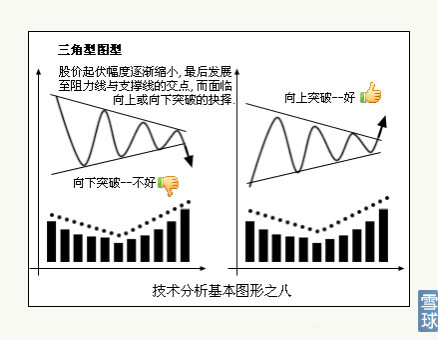
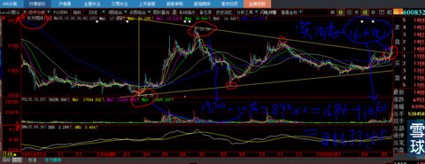
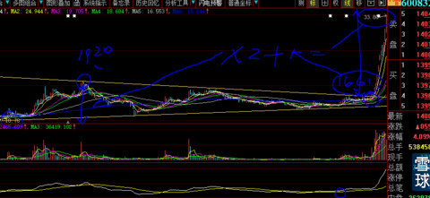
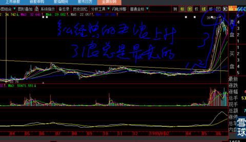
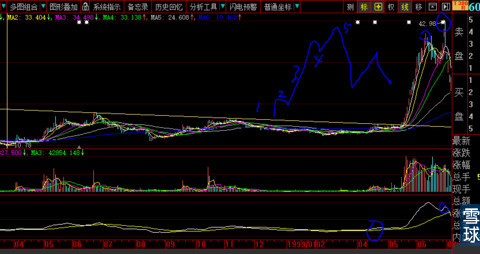
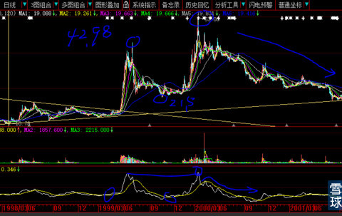

教科书上给我们看的是这样的。见下图，左边是下降三角形，右边是上升三角形。

告诉你们三角形的秘诀：
三角形无论是向下还是向上突破，从三角形的2/3位置突破力度最强，上涨（下降）的量度升幅（跌幅）是三角形垂直高度的最少1个、正常2个、极端3个高度。
从三角形的最末端开始的突破（三角形上下边的交汇延长点），无论是上涨还是下跌，力度逐级减弱。
看下图：600832东方明珠比1999年5月17日著名的“5.19”行情还提前2天，开始了大型三角形向上突破，开启短短一个月轰轰烈烈的连续翻倍行情。
我们仔细看下图，三角形的上边最高价19.2元，底边最低价10.7元，19.2-10.7=8.5垂直距离差额*2=17元+突破口位置16.6=目标位33.6元，假如是最强劲2/3出突破的3个量度升幅：垂直价差8.5*3=25.5元+16.6=目标价位42.1元。

9天后的1999年6月1日，东方明珠涨停收盘价为33.8元，正好达到2个量度升幅33.6元见下图

由于达到正常的短期升幅，第二天的6月2日就报收中阴线，隔天再收涨停板，再几天后达到三浪三最高点39.8元，远远超过2个正常的量度升幅，看来是要奔3个量度升幅的极端位置42.1元。见下图
再看看大型态，每一次的上升都包含了经典的5浪推升。

结果，东方明珠硬是被市场的热情非常完美的通过与第1浪等长的第5浪，也就是假突破方式完成了“大三角型短期极端升幅的3个量度升幅”42.1元图形的构造，实际价格触碰到42.98元，比预计仅仅高0.78元，见下图。完成了无论是波浪理论的完整5浪、还是三角形突破、或者是量度升幅。形态是那么的完美与对称。

接下来，就开始了漫长的下跌之旅。就如同今天的券商股，还有那么多人依依不舍。历史好像总与他们无关似的，不知道他们从哪里长出来那么强壮的心脏。

仔细研究上图。你们会发现，我的DMA会总是在那么关键正确的时间、地点告诉你去买入与卖出试点。在前后长达1年半的时间里，只需要进出两次就足够了，还需要那么多每天魂不守舍的唧唧歪歪？
上图顶部的假突破（见蓝色画圈处），白线根本不能随同股价一起创新高，形成典型的股价与技术指标的顶背离，就像今天的券商股。你看看上图，从股价的42.98元一口气跌到21.5元，整整跌掉50%，哪个是已经到手钱财的50%呀。
等它风云再起的时候，我的钝化技术指标DMA又在早期、中期、临门一脚之前多次发出信号，特别是黄色线，已经长达3个月的缓慢向上弧形弯曲。
临门一脚之前，白线由上向下触碰到黄线，就要开始翻身向上，这个买点就是我长年累月做股票最精要之处与秘密所在。
第二次的风云再起，头部的白线高度与上次基本持平，形成一条直线，虽然股价53.08元比上次的42.98元高处很多。
三角型下跌的终极深度与大概对应的时间，往往在三角型底边与斜边的交叉的垂直下端位置，这个要精确计算与测量。上图第二次地点位置，如果用更大的图形去看，会更加精准一点。这也解释了大牛股过后，必然是长时间的下跌，甚至长达数年。
不带走一片云彩@炒的是心:中信证券就像西门庆，他自己把感情（筹码）都换成现金了，李瓶儿们还在拿现金去换感情（筹码），幻想西门庆还会像上次（2007年）一样涨几十倍，我也差点就成了李瓶儿， 感谢心大。
炒的是心@不带走一片云彩:
1、股票价格上升趋势确立后，大概上涨的可能目标，心中可以提前有个大概预期准备，否则到时候受媒体蛊惑犯“屁股决定脑袋”错误；
2、看到心仪股时，既然人家最大的极端升幅都已经达到，就不要再去凑热闹了。
3、前2周我写过一篇专贴，题目叫《人多的地方不要再去》，是劝粉丝退出券商股或者千万不要再追（挂了一周时间约莫粉丝都看到后才删除），结果晚上写出第二天早晨就报道昨晚上海外滩发生人与人踩踏事件。
4、写本帖《量度升幅》的目的，只有今天凌晨一个粉丝体会道了，跟帖写到：“心大，你举的这个例子真他妈太绝了，必须怒赞。我知道你的苦心”。呵呵，不就是说券商股极端量度升幅都完成了，就像东方明珠之后的结果？结果就是今天券商出大利空，这也真是太巧了吧？上次踩踏，这次利空，都提前踩在点子上。
5、1月10日写出《这里是浙江龙盛的头部吗》专贴，第二天11日，湖北石首楚源化工集团大火，染料原料紧缺雪上加霜，好多粉丝跟帖都怀疑“那把火是不是心大放的”。上周五1月16日在技术面极端利空的尾盘时刻，我大力加仓600352浙江龙盛，今天浙江龙盛就出“年产2万吨对苯二胺项目环境保护设施竣工验收公示”信息。这一切巧的我自己都怀疑是不是幂幂中有神的指引。
6、我写过一篇帖子《人还是要相信运气的》，真是不信都不行。所以说，生活中要多跟有运气的人同行。我想这也是上天对我这样充满善意人格的最大奖赏。